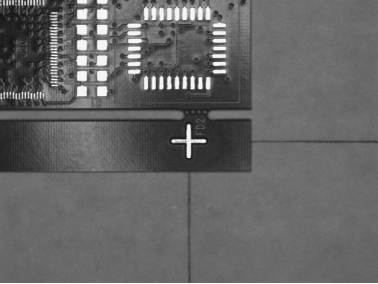

旋转镜像工具主要用来对输入图像进行旋转、镜像变换。

| 分类 | 参数名称 | 参数描述 |
|---|---|---|
| 属性窗口 | 旋转类型 | 逆时针将原始图像旋转一定角度，分为4种角度类型，0度、90度、180度和270度。 |
| 镜像类型 | 对原始图像进行镜像操作，分为4种类型，无、水平、垂直和水平垂直。 | |
| 是否彩色图 | 输入图像是否为彩色图像。 | |
| 图像窗口 | 输入图像 | 显示待变化的图像。 |
| 数据链 | 输入图像 | 输入待变化的灰度图像。 |
| 输入彩色图像 | 输入待变化的彩色图像。 | |
| 高级界面 | 无 | 无 |
| 分类 | 参数名称 | 参数描述 |
|---|---|---|
| 监视窗口 | 输出图像 | 输出灰度图像的宽度、高度、像素大小。 |
| 输出彩色图像 | 输出彩色图像的宽度、高度、像素大小。 | |
| 执行结果 | 工具执行结果。 | |
| 执行时间 | 工具执行时间。 | |
| 图像窗口 | 输出图像 | 显示工具执行结果图像，同监视窗口的输出图像参数。 |
| 执行结果 | 显示工具执行结果，执行成功显示“OK”，执行失败显示“NG”，同监视窗口的执行结果参数。 | |
| 数据链 | 输出图像 | 输出的旋转之后的灰度图像，供其他工具使用。 |
| 输出彩色图像 | 输出的旋转之后的彩色图像，供其他工具使用。 |
无
无
参见“\Samples\旋转镜像工具.gvp”。